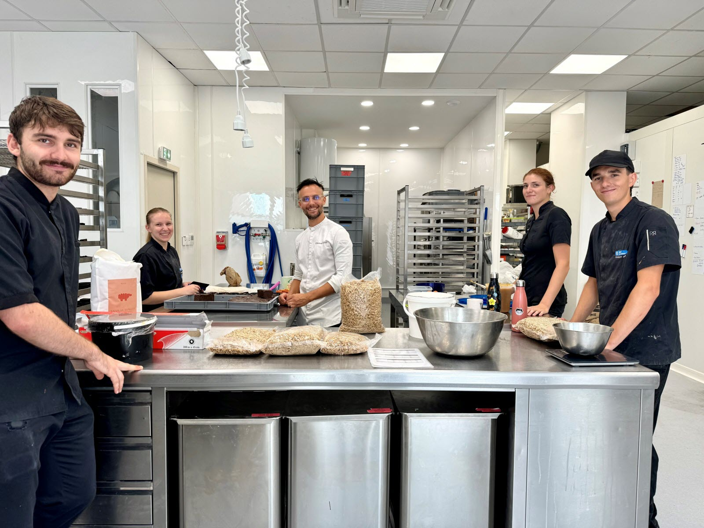
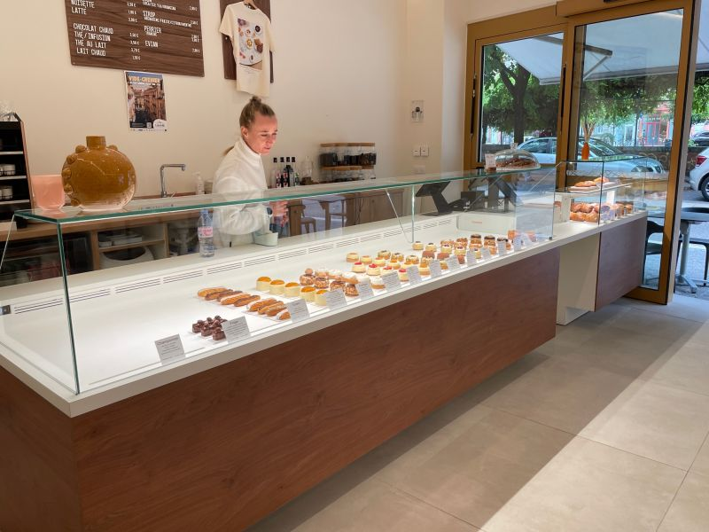

6/8 place Championnet · Grenoble
La saison
a du caractère.
Des fruits, des idées.
Et le plaisir de vous surprendre.

du fait maison
ARTISANALE & RESPONSABLEExplorer
100% fait maison✳Au fil des saisons✳Place Championnet
01 / LES CRÉATIONSDU GOÛT. DU CARACTÈRE.
Un peu de culot.
À chaque envie, sa gourmandise.
Entrez dans le détail.
Glissez pour découvrir
Touchez une création pour l’ouvrirChaque création a son histoire.
Cliquez pour la découvrir
Les créations évoluent avec les saisons et les idées.
Pour les nouveautés et les disponibilités, rendez-vous en boutique.
02 / DANS L’ATELIERLES MAINS, AVANT TOUT.
Du geste.
Du goût.
Du cœur.
Avant la première bouchée,
il y a les mains.
La précision d’un geste, l’attention portée à une finition, le plaisir de faire. La gourmandise prend forme ici, dans le laboratoire de la maison.


03 / RENDEZ-VOUS À CHAMPIONNETUNE ADRESSE, DES ENVIES.
Au cœur de Grenoble
On vous garde
une place ?
6/8 place Championnet38000 Grenoble
